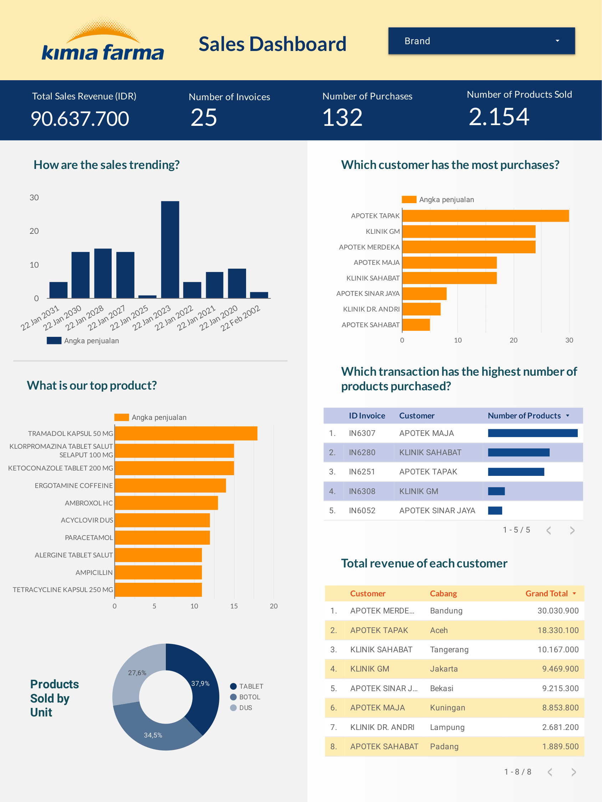

This is the Data Studio dashboard from the internship submission, shown here as exported at the time. Some labels and packaging terms are still in Bahasa Indonesia. The rebuilt page uses corrected dates and keeps every invoice.

Indonesian terms on this dashboard
| Term | Meaning |
|---|---|
| Angka penjualan | Sales figure / sales volume used in the chart legends |
| Apotek | Pharmacy |
| Klinik | Clinic |
| Cabang | Branch / sales branch city |
| BOTOL | Bottle |
| DUS | Box / carton |
| TABLET / KAPSUL | Tablet / Capsule |
| penjualan / pelanggan / barang | Sales / customer / product tables in the source data |